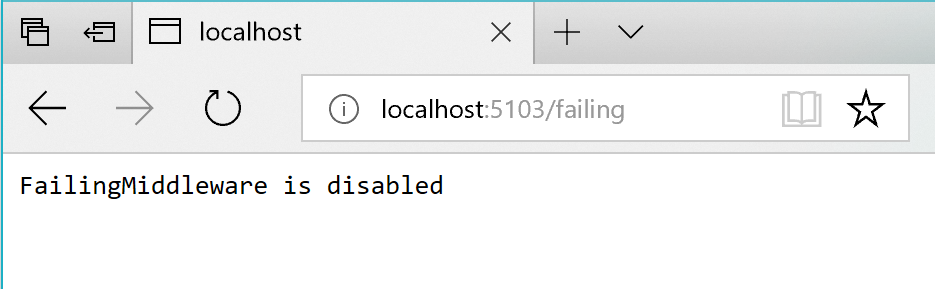

The Typed Client (CatalogService in the example) is activated by DI (Dependency Injection), meaning that it can accept any registered service in its constructor, in addition to HttpClient.
A Typed Client is, effectively, a transient object, meaning that a new instance is created each time one is needed and it will receive a new HttpClient instance each time it’s constructed. However, the HttpMessageHandler objects in the pool are the objects that are reused by multiple Http requests.
Finally, once you have your type classes implemented and have them registered with AddHttpClient(), you can use it anywhere you can have services injected by DI, for example in any Razor page code or any controller of an MVC web app, like in the following code from eShopOnContainers.
Up to this point, the code shown is just performing regular Http requests, but the ‘magic’ comes in the following sections where, just by adding policies and delegating handlers to your registered Typed Clients, all the HTTP requests to be done by HttpClient will behave taking into account resilient policies such as retries with exponential backoff, circuit breakers, or any other custom delegating handler to implement additional security features, like using auth tokens, or any other custom feature.
The recommended approach for retries with exponential backoff is to take advantage of more advanced .NET libraries like the open-source Polly library.
Polly is a .NET library that provides resilience and transient-fault handling capabilities. You can implement those capabilities by applying Polly policies such as Retry, Circuit Breaker, Bulkhead Isolation, Timeout, and Fallback. Polly targets .NET 4.x and the .NET Standard Library 1.0 (which supports .NET Core).
However, using Polly’s library with your own custom code with HttpClient can be significantly complex. In the original version of eShopOnContainers, there was a ResilientHttpClient building-block based on Polly. But with the release of HttpClientFactory, resilient Http communication has become much simpler to implement, so that building-block was deprecated from eShopOnContainers.
The following steps show how you can use Http retries with Polly integrated into HttpClientFactory, which is explained in the previous section.
Reference the ASP.NET Core 2.2 packages
HttpClientFactory is available since .NET Core 2.1 however we recommend you to use the latest ASP.NET Core 2.2 packages from NuGet in your project. You typically need the AspNetCore metapackage, and the extension package Microsoft.Extensions.Http.Polly.
Configure a client with Polly’s Retry policy, in Startup
As shown in previous sections, you need to define a named or typed client HttpClient configuration in your standard Startup.ConfigureServices(…) method, but now, you add incremental code specifying the policy for the Http retries with exponential backoff, as below:
The AddPolicyHandler() method is what adds policies to the HttpClient objects you’ll use. In this case, it’s adding a Polly’s policy for Http Retries with exponential backoff.
To have a more modular approach, the Http Retry Policy can be defined in a separate method within the Startup.cs file, as shown in the following code:
With Polly, you can define a Retry policy with the number of retries, the exponential backoff configuration, and the actions to take when there’s an HTTP exception, such as logging the error. In this case, the policy is configured to try six times with an exponential retry, starting at two seconds.
so it will try six times and the seconds between each retry will be exponential, starting on two seconds.
A regular Retry policy can impact your system in cases of high concurrency and scalability and under high contention. To overcome peaks of similar retries coming from many clients in case of partial outages, a good workaround is to add a jitter strategy to the retry algorithm/policy. This can improve the overall performance of the end-to-end system by adding randomness to the exponential backoff. This spreads out the spikes when issues arise. When you use a plain Polly policy, code to implement jitter could look like the following example:
As noted earlier, you should handle faults that might take a variable amount of time to recover from, as might happen when you try to connect to a remote service or resource. Handling this type of fault can improve the stability and resiliency of an application.
In a distributed environment, calls to remote resources and services can fail due to transient faults, such as slow network connections and timeouts, or if resources are responding slowly or are temporarily unavailable. These faults typically correct themselves after a short time, and a robust cloud application should be prepared to handle them by using a strategy like the “Retry pattern”.
However, there can also be situations where faults are due to unanticipated events that might take much longer to fix. These faults can range in severity from a partial loss of connectivity to the complete failure of a service. In these situations, it might be pointless for an application to continually retry an operation that’s unlikely to succeed.
Instead, the application should be coded to accept that the operation has failed and handle the failure accordingly.
Using Http retries carelessly could result in creating a Denial of Service (DoS) attack within your own software. As a microservice fails or performs slowly, multiple clients might repeatedly retry failed requests. That creates a dangerous risk of exponentially increasing traffic targeted at the failing service.
Therefore, you need some kind of defense barrier so that excessive requests stop when it isn’t worth to keep trying. That defense barrier is precisely the circuit breaker.
The Circuit Breaker pattern has a different purpose than the “Retry pattern”. The “Retry pattern” enables an application to retry an operation in the expectation that the operation will eventually succeed. The Circuit Breaker pattern prevents an application from performing an operation that’s likely to fail. An application can combine these two patterns. However, the retry logic should be sensitive to any exception returned by the circuit breaker, and it should abandon retry attempts if the circuit breaker indicates that a fault is not transient.
As when implementing retries, the recommended approach for circuit breakers is to take advantage of proven .NET libraries like Polly and its native integration with HttpClientFactory.
Adding a circuit breaker policy into your HttpClientFactory outgoing middleware pipeline is as simple as adding a single incremental piece of code to what you already have when using HttpClientFactory.
The only addition here to the code used for HTTP call retries is the code where you add the Circuit Breaker policy to the list of policies to use, as shown in the following incremental code, part of the ConfigureServices() method.
The AddPolicyHandler() method is what adds policies to the HttpClient objects you’ll use. In this case, it’s adding a Polly policy for a circuit breaker.
To have a more modular approach, the Circuit Breaker Policy is defined in a separate method called GetCircuitBreakerPolicy(), as shown in the following code:
In the code example above, the circuit breaker policy is configured so it breaks or opens the circuit when there have been five consecutive faults when retrying the Http requests. When that happens, the circuit will break for 30 seconds: in that period, calls will be failed immediately by the circuit-breaker rather than actually be placed. The policy automatically interprets relevant exceptions and HTTP status codes as faults.
Circuit breakers should also be used to redirect requests to a fallback infrastructure if you had issues in a particular resource that’s deployed in a different environment than the client application or service that’s performing the HTTP call. That way, if there’s an outage in the datacenter that impacts only your backend microservices but not your client applications, the client applications can redirect to the fallback services. Polly is planning a new policy to automate this failover policy scenario.
All those features are for cases where you’re managing the failover from within the .NET code, as opposed to having it managed automatically for you by Azure, with location transparency.
From a usage point of view, when using HttpClient, there’s no need to add anything new here because the code is the same than when using HttpClient with HttpClientFactory, as shown in previous sections.
Whenever you start the eShopOnContainers solution in a Docker host, it needs to start multiple containers. Some of the containers are slower to start and initialize, like the SQL Server container. This is especially true the first time you deploy the eShopOnContainers application into Docker because it needs to set up the images and the database. The fact that some containers start slower than others can cause the rest of the services to initially throw HTTP exceptions, even if you set dependencies between containers at the docker-compose level, as explained in previous sections. Those docker-compose dependencies between containers are just at the process level. The container’s entry point process might be started, but SQL Server might not be ready for queries. The result can be a cascade of errors, and the application can get an exception when trying to consume that particular container.
You might also see this type of error on startup when the application is deploying to the cloud. In that case, orchestrators might be moving containers from one node or VM to another (that is, starting new instances) when balancing the number of containers across the cluster’s nodes.
The way ‘eShopOnContainers’ solves those issues when starting all the containers is by using the Retry pattern illustrated earlier.
There are a few ways you can break/open the circuit and test it with eShopOnContainers.
One option is to lower the allowed number of retries to 1 in the circuit breaker policy and redeploy the whole solution into Docker. With a single retry, there’s a good chance that an HTTP request will fail during deployment, the circuit breaker will open, and you get an error.
Another option is to use custom middleware that’s implemented in the Basket microservice. When this middleware is enabled, it catches all HTTP requests and returns status code 500. You can enable the middleware by making a GET request to the failing URI, like the following:
For instance, once the application is running, you can enable the middleware by making a request using the following URI in any browser. Note that the ordering microservice uses port 5103.
http://localhost:5103/failing?enable
You can then check the status using the URI http://localhost:5103/failing, as shown in Figure 8-5.

Figure 8-5. Checking the state of the “Failing” ASP.NET middleware – In this case, disabled.
At this point, the Basket microservice responds with status code 500 whenever you call invoke it.
Once the middleware is running, you can try making an order from the MVC web application. Because the requests fail, the circuit will open.
In the following example, you can see that the MVC web application has a catch block in the logic for placing an order. If the code catches an open-circuit exception, it shows the user a friendly message telling them to wait.